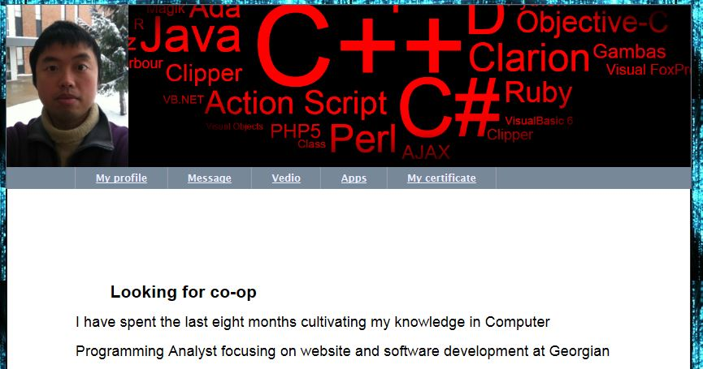

My Website
I have spent the last eight months cultivating my knowledge in Computer Programming Analyst focusing on website and software development at Georgian College. In addition to maintaining strong grades in my academic subjects, I have strengthened my programming skills by studying ASP.NET, JAVASCRIPT, WPF and WSF out of class.